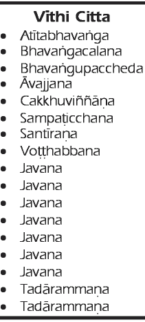
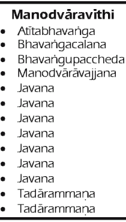

From Consciousness, Mind and Matter ArisesONSCIOUSNESS produces mind and matter. Therefore, with the arising of rebirth-consciousness,
mind and matter also arise. Rebirth-consciousness is invariably coupled with feeling (vedanā), perception (saññā), contact (phassa), volition (cetanā), attention (manasikāra), and other mental properties relating to the objects of deathbed visions. Every unit of consciousness is accompanied by these mental properties (cetasikā). The rebirths of some brahmās, devas, and human
beings involve the three wholesome roots of generosity, goodwill, and wisdom. Some beings are reborn with just the two roots of generosity and goodwill, while the births of earthbound devas and human beings with defective organs lack any wholesome roots. However, their rebirth is still a favourable rootless-birth as distinct from the unfavourable rootless-birth of the denizens of the lower realms. Rebirth may take one of three modes: rebirth from a mother, rebirth in putridity (samsedaja), or sudden rebirth of the fully developed physical body (opapātika). Rebirth from a mother is of two kinds: viviparous for human beings and other mammals, and oviparous for birds and reptiles. These living beings may differ in origin as they do in size and gestation or incubation period. We will leave it at that
now, and go on with human rebirth as described in the commentaries. With the arising of rebirth-consciousness, three kamma-originated material decads (kammaja-rūpakalāpa), or thirty material phenomena occur simultaneously.1 These are material phenomena that originate from kamma: the body-decad, the sex-decad, and the heart-base decad. Ten material phenomena: solidity, fluidity, heat, motion, colour, smell, taste, nutriment, vitality, and body-sensitivity form the body-decad. The first nine material phenomena with the material quality of sex form the sex
-decad. “Material quality of sex” means either of two germinal material phenomena, one for masculinity and the other for femininity. With the maturation of these material phenomena the sexual characteristics of men and women become manifest, as is evident with those who have undergone sex changes. In the time of the Buddha, Soreyya, the son of a merchant, instantly became a woman for having
unwholesome thoughts about Venerable Mahākaccāyana.2 All his masculine features disappeared and gave way to those of a woman. Soreyya even married and gave birth to two children. It was only when he begged for forgiveness from the elder that he again became a man. Later, he joined the
Sangha and became an arahant. It is comparable to the case of a man who develops rabies after having been bitten by a rabid dog. A person who is neither a male nor a female has no sex decad. He has only a body decad and heart-base decad (vatthu-rūpa). The heart-base is the physical basis of all types of consciousness except
for the fivefold sense-consciousness. So at the moment of conception the physical basis for rebirth-consciousness already exists. The three decads, or thirty material phenomena, form the embryo (kalala), which, according to ancient Buddhist books, marks the beginning of life. This embryonic materiality is the size of a tiny drop of butter-oil scum on a fine woollen thread. It is so
small that it is invisible to the naked eye. We should assume that it arises from the fusion of the semen (sukka) and the ovum3 (sonita) of the parents. If we reject this view, explaining the child’s physical
resemblance to its parents will be difficult. It is also said in the Sutta Pitaka that the physical body is the product of the four primary elements and the parent’s gametes. Moreover, the Suttas specify three conditions necessary for conception: the parents’ intercourse, the mother’s season, and the existence of a kammic cause to produce an embryo. Thus, according to the scriptures, the embryo clearly has its origin in the fusion of the parents’ semen and ovum. The semen and ovum dissociated from the parents are temperature-originated materiality but it is quite possible for this to assimilate kamma-originated materiality. Surgeons cut out scar tissue from the human body and replace it with healthy tissue. The graft is temperature-originated materiality when first grafted but, as it becomes integrated with the natural tissues, body-sensitivity or kamma
-originated materiality appears. Cases can also be cited of transplanting a heart, a liver, a kidney, or a cornea in place of diseased organs. No doubt these transplants develop kamma-originated materiality as body-sensitivity. Likewise, we should assume that the three kamma-originated material phenomena are fused with temperature-originated materiality from the parents. According to biologists, it is the fusion of the mother’s ovum and the father’s spermatozoa that
gradually develops and becomes a child. The original embryo is so small that it cannot be seen with the naked eye. So modern science agrees well with what the Buddhist books say about conception. Without the help of a microscope or other instruments, the Buddha knew how life begins as an embryo based on the parents’ semen and ovum. This was the Buddha’s teaching 2,500 years ago though it was only during the last 300 years that Western scientists discovered the facts about conception after
prolonged investigation with microscopes. Their discoveries bear testimony to the Buddha’s infinite intelligence. However, they are still unable to reveal the genesis of thirty material phenomena, probably because the extremely subtle kamma-originated material phenomena defy microscopic investigation. Thus the mental states and kamma-originated materiality are born of rebirth-consciousness. Kamma
-originated material phenomena are renewed at every thought-moment. Likewise, temperature-originated material phenomena are renewed every moment due to heat. From the arising of the first moment of subconsciousness, consciousness-originated material phenomena also occur, but bare sense-consciousness cannot cause materiality. So consciousness-originated materiality does not arise when bare sense-consciousness arises. However, with the arising of rebirth-consciousness, all other kinds of
consciousness develop in due course. After a week, the embryo (kalala) becomes turbid froth (abbuda), which turns into a lump of flesh (pesi) after the second week. This hardens into ghana in the third week, and in the fifth week the pasākha develops with four knobs for hands and legs, and one big knob for the head. The Buddhist books do not describe in detail the development after the fifth week. However, they do
say that after eleven weeks the four sensitive bases for seeing, hearing, smelling, and tasting appear. So too, does nutriment-originated materiality — the product of the nutriment in the mother’s body. It is also said that the embryo has toenails, fingernails, etc. The books do not go into further details as meditators do not need to know them. Such knowledge is beneficial only to doctors. Spontaneous RebirthFor beings like the Cātumahārājā Devas, when rebirth takes place, seven decads arise: the decads of the eye, ear, nose, tongue, body, sex, and heart-base. Decads of the same kind are innumerable
according to the size of the deva’s eyes, ears, etc. The decads for nose, tongue, body, and sex are not found in the three first jhānic realms, the three second jhānic realms, the three third jhānic realms, or in the Vehapphala and Suddhāvāsa realms. There the three decads for eye, ear, and heart-base, and one nonad — a total of four different material groups or thirty-nine material phenomena — arise
simultaneously with rebirth-consciousness. Of these four material groups, the vitality nonad takes on the function of the body decad. A brahmā’s body is pervaded by vitality nonads, as a deva’s body is by body decads. Asaññasattā Brahmās have no consciousness from the moment of rebirth. They have only vitality nonads that assume Brahmanic form. Lacking consciousness and consciousness-born
materiality, such a brahmā knows nothing and makes no movement; he is like a wooden statue. More remarkable than these brahmās are the formless brahmās who live for thousands of world-cycles through the successive renewal of mind and its elements. These accounts do not admit of scientific investigation and are known only to the Buddha and recluses
with psychic powers. The denizens of hell and the hungry ghosts who are forever burning and starving are not conceived in wombs, nor can they arise from putrid matter. Because of their unwholesome kamma, they come into being by materialisation. Like the devas, they develop seven decads or seventy material phenomena simultaneously. They seldom have defective sense faculties since they are doomed to suffer through sense-contact with demonic objects. Samsedaja BeingsAs the samsedaja beings are said to have their origin in putrid matter, they are likely to develop gradually. However, the Buddhist books refer to their full-fledged materialisation if they do not have
defective sense faculties. We cannot say which is true, development or materialisation, as kamma-originated material phenomena cannot be examined scientifically. So, for the time being, it is better to accept the view as stated in the scriptures. The development of kamma-originated and other material phenomena in samsedaja and spontaneous rebirths is generally similar to that for rebirth in the womb.
The only difference is that with the former beings, nutriment-born material phenomena arise from the time they eat food or swallow their saliva. Active-ConsciousnessActive-consciousness (vīthi-citta) differs from sub-consciousness. Subconsciousness resembles rebirth-consciousness with respect to objects and process. It is the stream of consciousness that follows rebirth-consciousness having its root in kamma. One of three objects forms its focus: kamma, kammanimitta or gatinimitta of the previous
existence. It is not concerned with the objects in the present life, but is the kind of mental state that we have when we are sound asleep. However, certain changes occur when we see, hear, smell, taste, touch or think, and these are called active-consciousness. Suppose that a visual form is reflected on the retina. Material phenomena, each lasting only seventeen thought-moments, are
renewed ceaselessly with the visual objects and their mental images. A group of sensitive eye material phenomena and a visual object occur simultaneously. However, a material phenomenon is not powerful at the moment of arising, so during the moment of subconsciousness, contact between the eye and its object does not occur. In other words, the visual object is not reflected on the eye. The subconsciousness that passes away before such reflection is called past subconsciousness (atītabhavanga). Then another
bhavanga arises and reflection occurs. As a result, subconsciousness is disrupted, its attention to its usual object wanes and it begins to consider the visual object. This is called vibrating subconsciousness (bhavangacalana). Then arresting subconsciousness (bhavangupaccheda) takes place, cutting off the stream of subconsciousness. The mind then becomes curious about the visual form impinging on the eye. This inquiring mind is called adverting-consciousness (āvajjana). This consciousness can advert to a sense
object impinging on any of the five sense-organs. Visual-consciousness follows, then receiving-consciousness (sampaticchana), which receives and examines the visual object. Bhavangais the resultant consciousness that stems from mental formations, as are visual-consciousness and the receiving-consciousness. They are called resultant consciousness (vipāka-citta), which is of two kinds, wholesome and unwholesome, depending on the mental formations associated
with it. On the other hand, adverting-consciousness is neither wholesome nor unwholesome, nor is it a resultant consciousness. It is termed functional-consciousness (kiriyā-citta), which means action without any kammic effect, the kind of consciousness that is usually attributed to arahants. After the mind has received the visual object, it probes its quality, whether it is pleasant, unpleasant
or neutral, which is investigating-consciousness (santīrana). Then decision (votthabbana) follows that determines that the object is pleasant, etc. This leads to seven moments of impulsion (javana), which follow each other in rapid succession. Impulsion occurs very quickly. It has speed and impetus that are absent in other factors of the process of consciousness. Impulsion is associated with powerful mental
properties, which may be wholesome or unwholesome, such as greed or generosity, so it is not surprising that unwholesome minds rush towards their objects. Greed urges us to pursue the desired object and to seize it by force. Anger impels us to attack and destroy its object blindly. Doubt, restlessness, and ignorance, too, speedily associate themselves with their respective objects. The same may be said of wholesome mental properties. Because of their frantic and impulsive nature,
sensual desires are also called kāmajavana. After the seven impulse moments, two registering moments (tadārammana) follow. This consciousness “registers” the object of impulsion and thus its function is to fulfil the lingering desire of its predecessor. In the process of consciousness, visual-consciousness is dependent on eye-sensitivity that arises with
atītabhavanga. Other types of consciousness are dependent on the heart-base (hadaya-vatthu) that arises with them. The fourteen types of consciousness from adverting to the second registering-consciousness are focused only on present objects. So these fourteen are active and differ from subconsciousness. After the cessation of the second registering-consciousness, which marks the end
of the process of consciousness, the mental life reverts to the subconscious state that is analogous to sleep. An analogy may help to explain the process of consciousness. A man is sleeping under a mango tree. A mango falls and he wakes up. Picking up the fruit, the man examines it. He smells it and, knowing that
it is ripe, he eats it. Then he thinks about its taste and falls asleep again. Here, the subconsciousness with kamma, kammanimitta or gatinimitta as object is like the state of being asleep. Waking up due to the fall of the mango is like the rising and passing away of subconsciousness. Picking up the fruit is adverting. Seeing the visual object is like seeing the fruit. Investigation is like the man examining the
fruit. To conclude that the fruit is ripe is decision. Impulsion is like eating the fruit, and registering is like thinking about its taste. Reverting to subconsciousness is like falling asleep again. If the visible object is not clear, it appears on the eye-organ after atītabhavanga has arisen two or
three times. For such objects, the active conscious process does not last until registration but ends in impulsion, after which it reverts to subconsciousness. If the visible object is still weaker, it is reflected only after atītabhavanga has arisen from five to nine times. The process of consciousness does not reach impulsion, but ends after two or three moments of
decision. In the practice of insight meditation, the process of consciousness that thus ends in decision is of great significance. One who practises constant mindfulness does not seek or attend to defiling sense-objects. So reflection is slow, adverting is weak, visual-consciousness is not clear, reception is not proper, inquiry is not effective, and decision is indefinite. So after inquiring two or three times the
mind relapses into subconsciousness. The object is not clear enough to defile the mind and one becomes aware of the impermanence, unsatisfactoriness, and insubstantiality of the phenomena. Just bare awareness of seeing occurs, and so the process of consciousness is wholly free from defilements. The process of consciousness that we have outlined above for the eye applies similarly to the ear,
nose, tongue, and body. Active-Consciousness of the Mind-doorThe mind-door process of consciousness is of three kinds according to
the impulsion involved: kammajavana, jhānajavana or maggaphalajavana. Here, what matters is the process of consciousness with kammic impulsion. While the stream of subconsciousness is flowing, mental images of familiar sense-objects appear, or sometimes unfamiliar sense-objects. Then subconsciousness is disturbed and the next time it is cut off. This is followed by mind-door adverting (mano-dvārāvajjana), which is similar to decision (votthabbana) in the five sense-door process. Like decision, adverting
leads to impulsion, producing agreeable or disagreeable emotions: fear, anger, confusion, devotion, awe, pity, and so forth. The impulsions arising at the five sense-doors are weak, so they neither lead to rebirth nor produce much other effect. However, the impulsions in the mind-door are potent enough to determine the quality of rebirth and all other kammic results. So it is imperative to guard against these impulses and control them. After seven impulse moments, followed by
two moments of registering, the mind sinks into subconsciousness. Thus the mind-door process of consciousness involves one moment of adverting, seven moments of impulsion and two moments of registering. With dim and indistinct objects, the mind skips registration, reverting to subconsciousness immediately after impulsion. If the object is very
weak, the mind does not attain even impulsion but lapses back to subconsciousness after two or three moments of adverting. This is obvious if we bear in mind the way that we have to focus on mind-objects during insight practice. The only resultant consciousness in this mind-door process is registering; the other two are functional, and do not stem from mental formations. Follow-Up Active-ConsciousnessThe mind-door process may review sense-objects after the sense-door active-consciousness. Until this process occurs, the mind has only ultimate materiality (paramattha-rūpa) as its object. It is not concerned with concepts such as ‘man’ or ‘woman,’ so one cannot be misled by appearances. One
should try to contemplate immediately after seeing, hearing, etc. This is why we stress the immediate present as the meditator’s focus of attention. If one is not mindful of this mind-door consciousness, another mind-door process arises concerning the sense-object. Then the sense-object becomes a specific object of attention as a shape. This process is vulnerable to strong unwholesome impulses. It
is followed by another mind-door process where the attention is focused on notions such as ‘man’ or ‘woman,’ making it more susceptible to unwholesome impulses. With an unfamiliar object, the process of consciousness involves three stages: seeing, investigation and cognizance of the object in conventional terms. The process stops short of naming the object.
The process of consciousness that arises concerning concepts involves hearing, investigation, and cognizance of the concept, and awareness of the relevant object. Consciousness and Mental PropertiesDependent on rebirth-consciousness, mental phenomena associated with it arise, such as feeling,
remembering, perception or reflection, with three decads (or thirty material phenomena). After the cessation of rebirth-consciousness, mental properties (cetasikā) arise with every moment of consciousness. So do material phenomena conditioned by consciousness, kamma, temperature (utu), and nutriment (āhāra). There is no doubt about the close connection between consciousness and
mental properties. When consciousness is active, we feel, remember or think, and so greed, anger, faith, and so forth arise. Equally obvious are the physical phenomena that stem from consciousness when we stand, sit, go or do anything that we wish to do. According to the commentary, this obvious fact is the basis for inferring that the rebirth-consciousness at conception leads to three decads or
thirty material phenomena. The arising of rebirth-consciousness and material phenomena at conception takes place so fast that it is imperceptible even to the divine eye. The divine eye may see what happens shortly before death and after rebirth, but it is only the Buddha’s omniscience that can see decease-consciousness and rebirth-consciousness directly. However, from what we know about the cause of physical phenomena, we can infer that at conception materiality arises from rebirth
-consciousness. Some physical phenomena have their origin not in consciousness but in kamma, temperature, or nutriment. However, without consciousness they will have no life. A corpse, although composed of temperature-originated material phenomena, is lifeless. It is because of the contribution of consciousness that the material phenomena based on kamma, temperature, and nutriment exist and
form a continuous stream of life. Once death supervenes, cutting off the stream of consciousness, the mental properties and living material phenomena cease. Hence the teaching that mind and matter is conditioned by consciousness. Because of mental formations (wholesome or unwholesome kamma) consciousness flows on without
interruption in the new existence. Coupled with each unit of consciousness is mind and matter, which arises ceaselessly. The duration of mind and matter depends on consciousness. If the stream of consciousness lasts an hour, so does mind and matter. If consciousness flows for a hundred years, we say that the life of mind and matter is a hundred years. In brief, we should understand that life is only a ceaseless causal relationship of mind and matter with consciousness. SummaryIgnorance causes mental formations; because of ignorance of the Four Noble Truths people make an effort to be happy. They think that they will be happy if they get what they want. However, the
objects of their desire are impermanent and so lead to suffering. Not knowing the truth of suffering, they think, speak, and do things for their well-being in both the present life and after death. These kammas lead to rebirth in lower or higher realms. Beginning with this rebirth-consciousness, a stream of consciousness flows continuously until death, its nature being determined by kamma. The physical body too is conditioned by kamma, as well as by consciousness, temperature, and nutriment.
That physical phenomena are conditioned by consciousness is obvious, for all our bodily and verbal actions, such as moving or speaking, are rooted in it. A meditator has to practise mindfulness based on these consciousness-originated material phenomena. Knowing them empirically is important, so the
Buddha said in the Mahāsatipatthāna Sutta, “The bhikkhu knows that he walks when he walks and that he stands when he stands.” According to the commentary, if we know experientially the dependence of consciousness-originated material phenomena on consciousness, we can know by inference the contribution of consciousness to material phenomena originated from kamma, temperature, and nutriment. Hence, the teaching of Dependent Origination, “Conditioned by consciousness, mind and
matter arise.” One cannot know rebirth-consciousness empirically or, for that matter, any other past consciousness in its ultimate sense. One can only know the reality of consciousness as it is functioning right now, and one can know this only if one is always mindful. If one focuses on present consciousness, one comes
to know mind and matter fairly well. For if one notes, “seeing, seeing” and knows visual-consciousness, one also knows the phenomena connected with it. Here, by ‘visual-consciousness’ we mean not only the visual-consciousness but the whole mental process of seeing. The meditator notes it as a whole and not piecemeal. Moreover, active-consciousness appears to the meditator as a single moment of
consciousness. This way of introspection accords with the teaching in the Patisambhidāmagga that says, “The consciousness that focuses on materiality arises and passes away. The meditator then contemplates the dissolution of the consciousness that has watched the dissolution of materiality.” In other words, when a material phenomenon is manifest, consciousness watches it. Since that consciousness has attained insight of dissolution, after seeing impermanence in the material
phenomenon, it too then dissolves. Thereupon the dissolving vipassanā citta itself becomes the object of contemplation. This vipassanā citta is not a simple citta. It is composed of at least adverting and seven impulse moments. However, these eight cittas cannot be watched individually, the whole process of consciousness must be the object of attention. Here, visual-consciousness means the whole mental process of seeing, which includes wholesome or
unwholesome impulses. So observing it leads to awareness of feeling (vedanā), perception (saññā), contact (phassa), attention (manasikāra), volition (cetanā), and so forth. However, volition is more apparent with thinking. It comes into full play when we think of what we have to do the next day. It urges and agitates us, and its function is unmistakable. One who constantly watches the mental and
physical process is aware of volition in action whenever speaking, or when moving any part of the body. For example, while practising mindfulness, if you feel an itch that you wish to get rid of, you note the urge to remove the itch. It is volition that urges you to scratch. Thus volition is manifested in your everyday action, speech, and thinking. In brief, if you know the visual-consciousness through
contemplation, you know the mental aggregates born of it and the material phenomena of the whole body that form its basis. This accords with the teaching, “Dependent on consciousness mind and matter arise.” The same may be said of the other sense faculties. Awareness of consciousness means awareness of
all the psychophysical phenomena connected with it. The awareness of contact is based on pleasant and unpleasant sensations when these sensations are manifest. It is based on contact when motion and rigidity are manifest. When you note the desire to bend the arm, you know the volition behind it. When you contemplate the consciousness that thinks, you know the mind and matter associated with it. If you find yourself committing something to memory, you know perception (saññā). If you notice
your intention to do or say something, you become aware of volition (cetanā). On feeling your desire for something, you know that it is greed (lobha), and if you are irritated, you know that it is ill-will (dosa). Delusion (moha) can be known when you regard yourself as a permanent and happy individual. You know non-greed when you note the absence of desire. Your intention to do or say something is
followed by action or speech. So through contemplation, you realise that consciousness is the cause of material phenomena in the body. Consciousness and psychophysical phenomena are interdependent. Just as consciousness produces mind and matter, so too, mind and matter condition consciousness, for it is only through the collective
support of mental properties with matter as the physical basis that consciousness arises. The Mahāpadāna Sutta tells us how the bodhisatta reflected on Dependent Origination just before he attained enlightenment. He found that mind and matter, the six senses, contact, feeling, craving, attachment, and becoming were the links in the chain of causation leading to birth, aging, and death.
Then it occurred to him that mind and matter are conditioned by consciousness and vice versa. The discourse ascribes this statement about the correlation between consciousness and mind and matter to Bodhisatta Vipassī. Nevertheless, we should understand that it is a fact discovered by all bodhisattas before they attain supreme enlightenment. Although consciousness is interdependent with mind and matter, the former is the determining factor,
so it is described as the cause of the latter. When consciousness arises because of mental formations, its concomitant mental properties and material phenomena arise simultaneously. So consciousness arises at the moment of rebirth, with mind and matter. Moreover, they include the six senses, contact, and feeling. However, since consciousness is the origin of mind and matter, which is the cause of the
six senses and so forth, the Buddha says, “Consciousness conditions mind and matter,” to distinguish between cause and effect. Likewise, a verse in the Dhammapada describes the mind (mano) as leading the mental properties: “Manopubbangamā dhammā manosetthā manomayā
Manasā ce padutthena bhāsati vā karoti vā
Tato nam dukkhamanveti cakkam ‘va vahato padam.”
“Mind is the forerunner of all states. Mind is chief, and they are mind made. If one speaks or acts with an impure mind, suffering follows, just as the wheels of a cart follow the ox that pulls it.” (Dhp v 1)
Consciousness and mental properties arise together, but consciousness is described as leading the
mental properties because of its predominant role. If a man’s mind is corrupt, he does unwholesome deeds, utters foul words, and harbours immoral thoughts. These three kinds of kammas are mental formations born of ignorance. They become potential for unfavourable kammic effect. Every deed, speech or thought is accompanied by seven impulse moments that flash forth several times. If the first
impulse moment is favourable, the kamma is productive in the present life; otherwise, it becomes sterile. If the seventh impulse moment is favourable, it produces deathbed visions and produces kammic effects in the next life; otherwise, it is sterile. As for the other five impulse moments, they produce kammic effects from the third existence until the last (the existence when nibbāna is to be attained)
under favourable circumstances. They become sterile only after the attainment of nibbāna. Before the attainment of nibbāna, their potential remains intact for innumerable lifetimes, ready to bear fruit when circumstances permit. Unwholesome kamma bears fruit as mental and physical suffering in the lower realms. If by virtue of wholesome kamma, one is reborn in the human world, the unwholesome kamma will bring suffering, whatever one’s station in life. The Story of Venerable CakkhupālaThe Dhammapada verse just referred to was uttered by the Buddha concerning Venerable Cakkhupāla. The elder had been a physician in one of his previous lives. He had cured a blind woman and restored
her sight. The woman had promised to be his slave if she recovered her sight. However, to escape her promise she lied to him that she was worse off than before. Seeing her trick, the physician gave her an eye-lotion that destroyed her sight completely. For his malicious kamma the man suffered in many lives and in his last existence he became Venerable Cakkhupāla. He practised meditation as instructed by
the Buddha with sixty other monks at a forest retreat. He never laid down while meditating. Due to his unwholesome kamma, he developed an eye-infection. He refused to lie down to apply the eye-lotion and so the doctor gave up treating him. Reminding himself of certain death, the elder redoubled his efforts. At midnight he simultaneously became blind and attained arahantship. To an ordinary person, the elder’s blindness may seem to have been caused by his over-exertion. The
main reason, however, was the malicious deed he had committed in his previous life as a doctor. Even if he had not practised meditation, he might have become blind somehow or other. The attainment of arahantship was an immense benefit that he gained from his fervent zeal and strenuous exertion. We can learn two things from the story of Venerable Cakkhupāla. As an energetic monk, he continued
to practise meditation after he became an arahant. As he paced up and down, the insects in his path were trampled to death. When the Buddha was told of this, he said that the elder had no intention of killing the insects, so he was free from any moral responsibility for their death. So we should note that causing death without volition is not a kammic act. The bodies of arahants
have weight if they have no psychic power or if, despite having psychic power, they do not exercise it. Some Buddhists have scruples about their moral purity when they cook vegetables or drink water containing microbes. They should, of course, remove living beings that they can see, but they need have no qualms about the accidental destruction of life. Some Jains are said to feel guilty over the
death of insects that rush against a burning lamp. This is an extreme view. Volition as the keystone of moral problems is borne out by Venerable Moggaliputtatissa’s verdict in his reply to King Asoka. The Elder’s VerdictWhen King Asoka supported the Buddhadhamma lavishly, heretics joined the Sangha for the sake of
material benefits. The bhikkhus refused to have anything to do with the bogus monks, so for seven years the Pātimokkha recital fell into abeyance at the Asokārāma monastery in Pātaliputta. So King Asoka sent a minister to request the bhikkhus to perform the Pātimokkha, but they refused to comply. They said that the Pātimokkha was to be recited only in an assembly of pure bhikkhus. If there
happened to be a morally impure monk in the assembly, he had to be admonished and penalised for any infraction of Vinaya rules. The Sangha held the recital only when there was reason to believe in the purity of every member. They did not hold it with non-bhikkhus, since to do so would be a serious offence. The minister took this reply to be in defiance of the king’s order and so put the virtuous monks
to the sword. Venerable Tissa, the king’s younger brother, escaped death only because the minister recognized him just in time. On hearing the news, the king was deeply shocked and asked Venerable Moggaliputtatissa whether he was personally responsible for the death of the bhikkhus. The elder asked the king whether he had
intended to have the monks killed. When the king replied that he had no such intention, the elder said that he was free from kammic responsibility. The elder gave this verdict based on the Buddha’s saying, “Cetanāham bhikkhave kammam vadāmi — it is volition, monks, that I call kamma.” He also cited the Tittira Jātaka in which the bodhisatta, who was then a rishi, emphasised the primacy of volition in the operation of kamma. The story of Venerable Cakkhupāla also shows that an arahant has body-weight like ordinary people. This is evident in the death of insects trampled by the elder. In recent years there have been some reputed arahants in Burma. Some women reportedly tested their purity by having flowers on their hands trodden by their feet. It is said that the flowers were not crushed and their hands not hurt.
However, arahants who do not have (or exercise) psychic power cannot avoid crushing something if they tread directly on it. A more reliable test is to check whether a person has craving, attachment, anger, depression, fear, anxiety, restlessness, the tendency to speak ill of others, the habit of laughing loudly or is irreverent towards the Buddha. One who has such defects is not an arahant. If a thorough
inquiry does not reveal any such weaknesses, one may assume that the person is close to arahantship. Pure Thought and HappinessJust as an impure thought is followed by suffering, a pure thought is followed by happiness. Those who
think, speak, and act with pure thoughts cultivate wholesome kamma. Wholesome kamma invariably leads to happiness in the present life and after death. This was emphasised by the Buddha in the story of Matthakundali, the son of a miserly brahmin. When he became severely ill, his father left him to his fate as he did not want to spend any money for medical treatment. He moved his dying son outside the house to prevent those who came to ask about the patient from seeing his possessions.
The Buddha saw the dying boy with his divine eye and knew it would benefit many people if the boy saw him before his death. So, walking for alms with other bhikkhus, the Lord passed the brahmin’s house. At the sight of the Lord the boy was filled with devotion. Shortly afterwards he died and was reborn in Tāvatimsa heaven. Reviewing his past, he realised how his devotion to the Buddha had led
him to the celestial realm. He also saw his father mourning in the cemetery. As he wished to teach his father a lesson, he came to the cemetery in the guise of a boy resembling Matthakundali, and started crying. Questioned by the old brahmin, he said that he needed a pair of wheels made from the sun and the moon for his golden chariot. When the brahmin pointed out the futility of his desire, the boy replied
that the sun and moon were at least visible, whereas the brahmin was longing for his dead son who could not be seen. He asked who was more foolish, he or the brahmin. This brought the brahmin to his senses. The deva revealed his identity and told him how adoration of the Buddha on his deathbed had benefited him. He urged his father to seek refuge in the Buddha, Dhamma, and Sangha and to observe the five precepts. The brahmin invited the Buddha and the bhikkhus to his house for the morning meal. Believers and nonbelievers alike were present at the feast. After the feast, the brahmin asked the Lord whether anybody had attained the celestial realm just through devotion to the Buddha. The Lord replied that many people had done so. Matthakundali Deva then appeared and told the Lord how his devotion to
the Buddha had led to rebirth in heaven. The people were deeply impressed by the power of faith in the Buddha that had so greatly benefited the young man, although he did not care much for good deeds before his death. Then the Buddha uttered the second verse of the Dhammapada: “Manopubbangamā dhammā manosetthā manomayā
Manasā ce pasannena bhāsati vā karoti vā
Tato nam sukhamanveti chāyā ‘va anapāyinī.” “Mind is the forerunner of all states. Mind is chief, and they are mind made. If one speaks or acts with a pure mind, happiness follows, just like one’s own shadow that never leaves.”
The commentary says that after hearing the verse the brahmin and the deva attained stream-winning.
It is noteworthy that the mere thought of the Buddha led to the young man’s rebirth in the celestial realm. He did not seem to have any particular aspiration for nibbāna. His two-root rebirth as a deva was lacking the root condition of wisdom, yet by hearing a verse he became a stream-winner. These two verses from the Dhammapada echo the teaching of Dependent Origination that consciousness is conditioned by mental formations. For the verses say that happiness and misery arise from mental
formations. In fact, happiness or misery accompany consciousness. Again, the presence of consciousness implies the existence of associated mental properties and its physical basis of materiality. Hence, the teaching that consciousness conditions mind and matter. |